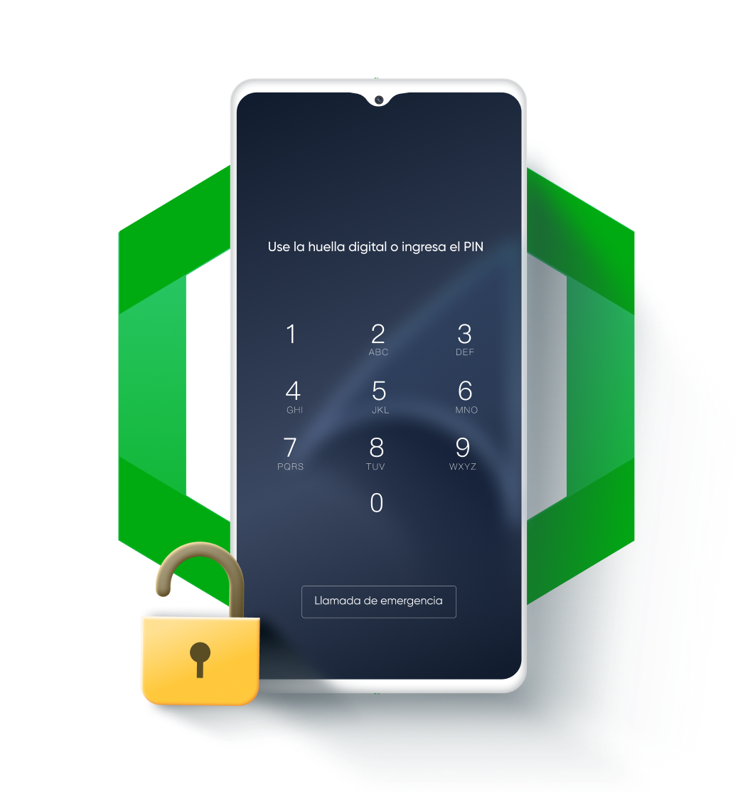

Métodos de Desbloqueo
El sistema operativo Android ofrece diversos métodos para proteger el acceso a los dispositivos, mejorando la seguridad y privacidad de los usuarios. Los principales métodos de desbloqueo incluyen:
- PIN: Un código de seguridad numérico que generalmente consta de 4 a 6 dígitos. Es uno de los métodos más comunes y fáciles de recordar, aunque no es el más seguro en comparación con las huellas dactilares o el reconocimiento facial, ya que puede ser adivinable mediante ataques de fuerza bruta si el usuario elige un PIN simple. 
- Patrón: Un patrón de conexión entre puntos en una cuadrícula que el usuario debe dibujar para desbloquear el dispositivo. Aunque es más visualmente atractivo que el PIN, puede ser vulnerable a ataques de "smudge" (huellas dactilares en la pantalla) que pueden revelar el patrón utilizado.
- Huella dactilar: Un método biométrico de autenticación, que utiliza las huellas dactilares del usuario para desbloquear el dispositivo. Es más seguro que los métodos anteriores, ya que las huellas dactilares son únicas y difíciles de falsificar, aunque no infalibles, ya que pueden existir vulnerabilidades en los sensores.
- Reconocimiento facial: Este método utiliza la cámara frontal del dispositivo para identificar al usuario mediante el reconocimiento facial. Es más conveniente, pero también más vulnerable a engaños, ya que algunas implementaciones pueden desbloquear el dispositivo con una foto del usuario.


Cada uno de estos métodos tiene ventajas y desventajas en términos de seguridad y facilidad de uso, pero en general, los métodos biométricos (huella dactilar y reconocimiento facial) son preferibles para aquellos que buscan una mayor seguridad y conveniencia.
Elaborado por Luigi Torres